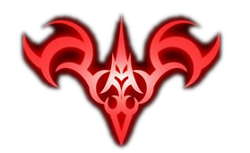

为了得到“圣杯”能实现一切愿望的奇迹之术，七名魔术师召唤七名英灵发起一场圣战。 他们必须奋战到底，因为最终只有一人可以获得“圣杯”的力量－－“圣杯战争”就此展开。
这场圣战并没有因为过去的三次战役而平息；如今，第四次战役即将开火。 魔术师们带着必胜的决心，聚集到被称为“冬木”的战场迎接这神圣的战役。然而，他们之中却有一人不明白自己到底为何而战。 他就是──言峰绮礼。言峰绮礼不能理解自己为什么被选中，并被赋予令咒。 不过，命运将牵引他遇见另一位参战者，那就是──卫宫切嗣。卫宫切嗣比任何人都渴望得到“圣杯”。 他为了达成目标，用尽所有残酷的手段。在超人气游戏“命运停驻之夜”中，对于10年前的第四次战役只概略提及。 关于士郎的养父、凛的父亲，以及年轻气盛的言峰绮礼赴战的真相，如今将一一揭幕......
从此吾剑将随汝同在 汝之命运将与吾共存 于此,契约完成
十年前，几乎毁灭世界的大灾难中，卫宫士郎被魔术师卫宫切嗣所救，成为其养子。 十年后，士郎为履行与已故的养父之间的约定——成为“正义的伙伴”，而每日不停的进行魔术锻炼。 偶然的一天，士郎被卷入了称为“圣杯战争”的魔术师之间的对决。 规则是一位魔术师与一位“英灵”结成契约。所谓“圣杯战争”，胜利者可以获得圣杯来实现任何愿望。 于是，七位魔术师与七位“英灵”一起加入了这个为了创造奇迹的厮杀之中。 卫宫士郎深知，十年前的那场大灾难就是“圣杯战争”引起的，为了避免悲剧再次发生，他与自己的“英灵”Saber一起， 投身于这充满危险与艰辛的”圣杯战争”之中。
无
限
剑
制